1. Kousanji
Kousanji được biết đến là địa điểm ngắm lá đỏ đẹp nhất tỉnh Hyogo với cảnh chùa cổ kính nhuộm màu áo đỏ khi thu về. Ngồi từ điện chính của chùa nhìn ra vườn, một bức tranh mùa thu đẹp mơ màng hiện ngay trước mắt bạn. Đừng bỏ qua địa điểm ngắm lá đỏ đẹp tuyệt vời tại chùa Kousan (高山寺) nhé.
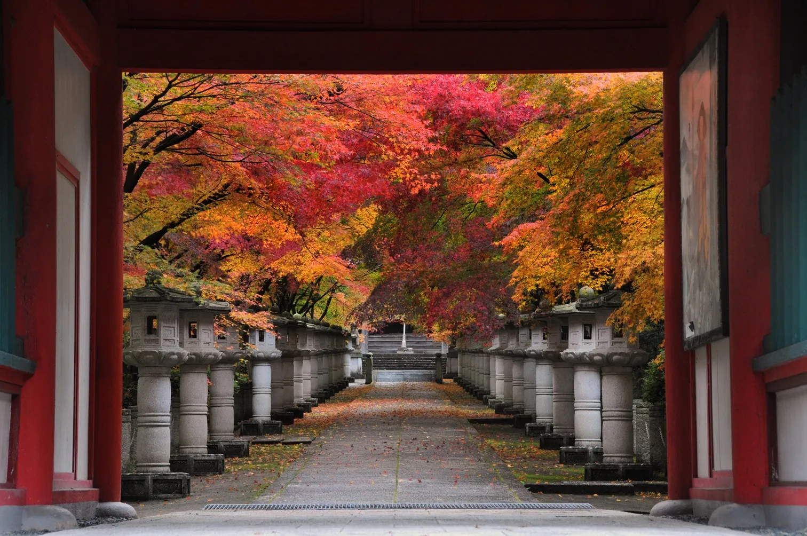
Website: www.hyogo-tourism.jp/spot/
2. Ngắm lá đỏ tại rừng thực vật Kobe
Vườn rừng thực vật Kobe (神戸市立森林植物園) đã đỏ rực rồi các bạn nhé! Cuối tuần này thời tiết rất đẹp và đây cũng là thời điểm lý tưởng để đi ngắm lá đỏ tại đây. Ngắm cảnh đẹp mê hồn của một rừng lá đỏ xung quanh hồ nước hay picnic dưới các tán cây đổi màu sang thu sẽ thư thái, giúp bạn lấy lại năng lượng sau một tuần làm việc vất vả.

Website: https://www.kobe-park.or.jp
3. chùa Kogenji
Kogenji (高原時) là ngôi chùa lịch sử của giáo phái Zen được biết đến không chỉ lịch sử lâu đời của ngôi chùa này mà còn rất nổi tiếng với lá vàng lá đỏ mùa thu ở tỉnh Hyogo cũng như vùng Kansai tại Nhật Bản. Tại đây có rất nhiều loại lá đỏ như lá phong, lá momiji và đặc biệt có loại lá phong đỏ cỡ lớn được cho là mang giống cây từ Hàng Châu Trung Quốc về trồng. Có thể nói nơi đây tụ hội rất nhiều loại cây lá đỏ đẹp của mùa thu Nhật Bản.
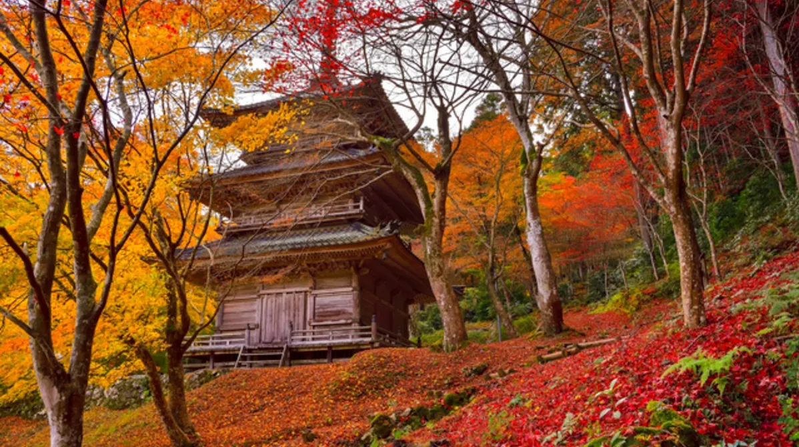
Trong đợt lễ hội mùa thu từ đầu tháng 11 đến hết tháng 11, tại chùa Kogenji sẽ được thắp đèn sáng light-up rất đẹp. Cả ngôi chùa rực đỏ dưới ánh đèn và màu của lá đỏ mùa thu.
Website: www.kougenji-tanba.or.jp/
4. Hyōgokenritsu Flower Center
Hyogokenritsu Flower Center là một trong những công viên có vườn hoa và cây xanh tốt nhất trong cả nước, trong đó có tới 46 hecta là rừng thông tự nhiên. Con đường Momijibahu rợp bóng cây được trồng ở hai bên con đường chính sẽ được nhuộm đỏ rực khi mùa thu về. Thời điểm ngắm lá đỏ đẹp nhất tại đây là tháng 11.
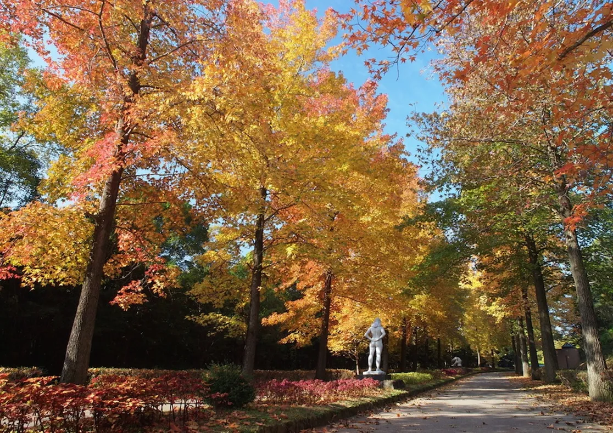
Website: www.hyogo-park.or.jp/flower-center/
5. Byakugōji
Chùa Byakugo (白毫寺) có tới hơn 1,300 năm lịch sử. Trong khu vực ngôi chùa rộng lớn có một cái hồ hình trái tim với một cây cầu Taiko, kết nối thế giới của con người và thế giới của Đức Phật. Ngôi chùa này nổi tiếng với hoa anh đào vào mùa xuân, hoa từ đẳng đẹp nổi tiếng cả nước và khi mùa thu về cả ngôi chùa nhuộm màu lá đỏ đẹp như tranh vẽ.
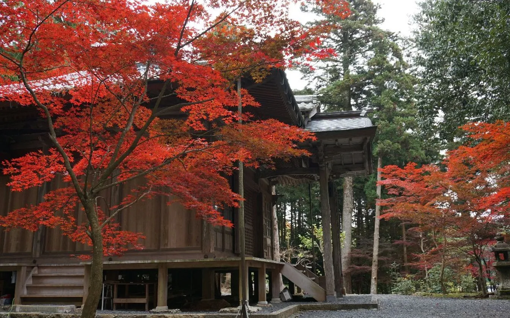
Website: www.byakugouji.jp/
6. HOTOKUJI Ở GUNMA
Một địa điểm ngắm lá đỏ rất đẹp tại vùng Kanto đó chính là chùa Hotokuji tại tỉnh Gunma. Ngôi chùa cổ kính Zen ở thành phố Kiryu tỉnh Gunma được xây dựng bởi Chúa Masatsuna Kiryu Sano, một lãnh chúa phong kiến trong thời Muromachi.
Mùa thu năm nay, ngoài lá đỏ tuyệt đẹp 🍁, phía ngoài vường còn dược trang trí thêm những chiếc ô màu sắc rực rỡ với màu sắc chủ đạo là đỏ-hồng-cam-vàng.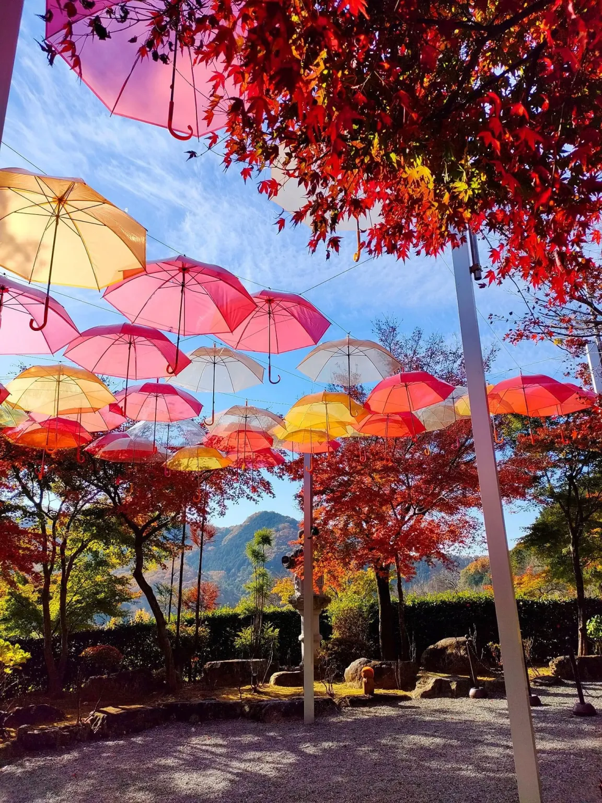 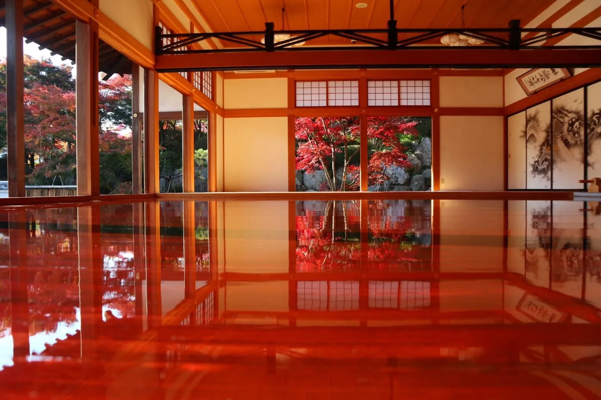
Vào khoảng giữa tháng 11 hàng năm, hơn 100 cây momiji lá đỏ trong khuôn viên chuyển sang màu đỏ rực rỡ. Bạn cũng có thể đi ngắm lá đỏ ở khu vực núi xung quanh chùa cũng rất đẹp. Triển lãm đặc biệt “hình ảnh phản chiếu của lá momiji mùa thu” sẽ diễn ra từ giữa tháng 11, thời điểm đẹp nhất để ngắm lá đỏ mùa thu tại chùa Hotokuji.
Website: www.houtokuji.jp/reflection-autumn.html
7. MUSE-PARK CHICHIBU
Một trong những địa điểm ngắm lá vàng lá đỏ đẹp nhất ở Saitama đó chính là công viên MUSE ở Chichibu. Muse-park không chỉ là một công viên với nhiều khu vui chơi giải trí hấp dẫn với các bạn nhỏ mà còn là địa điểm lý tưởng để bạn picnic ngày cuối tuần cùng gia đình trong tiết trời thu se lạnh với cảnh đẹp mê đắm lòng người.
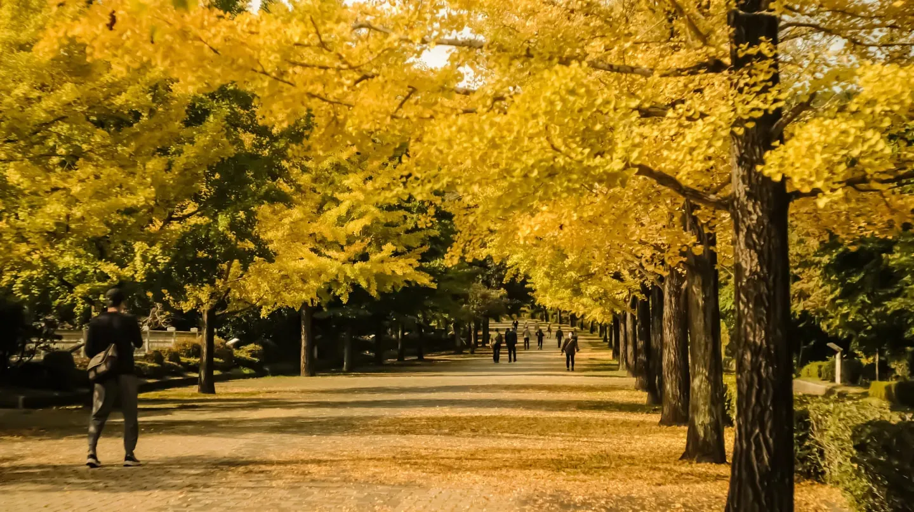
Từ giữa tháng 10 hàng cây Icho bắt đầu ngả vàng dần và đẹp nhất là vào cuối tháng 10. Chỉ cần đi bộ dọc theo hàng cây icho này thôi là bạn đã có thể đắm mình vào mùa thu Nhật Bản rồi đó.
Website: www.muse-park.com
8. Kawachi Fujien Wisteria Garden
Nếu bạn muốn thưởng thức hoa mùa xuân ngoài hoa anh đào, bạn nên đến thăm vườn hoa Tử Đằng Kawachi ở tỉnh Fukuoka. Khu vườn chào đón du khách với khung cảnh hùng vĩ được tạo nên bởi hàng ngàn bông hoa Tử Đằng. Chúng có nhiều màu sắc bao gồm tím, trắng và hồng, tạo ra một sự tương phản vô cùng đẹp mắt cùng với thiên nhiên xung quanh.
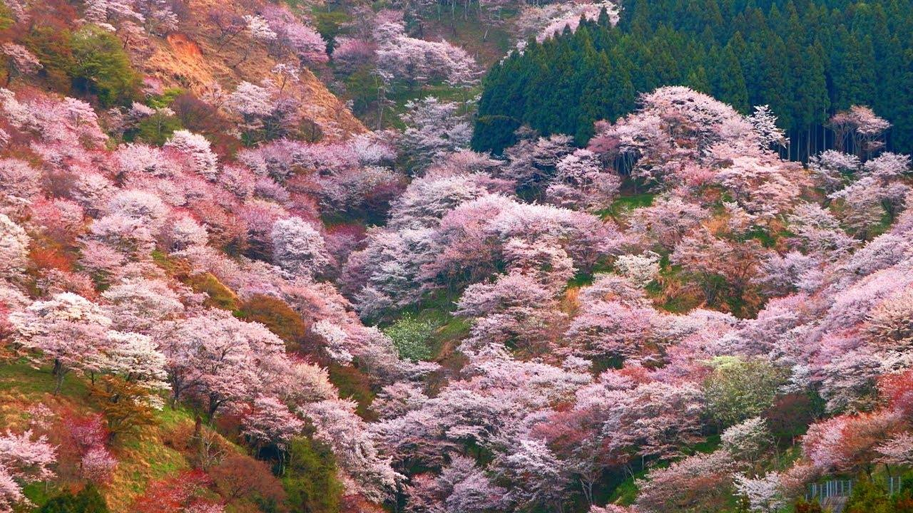
Website: #
9. CÔNG VIÊN SHIROYAMA TẠI TỈNH TOCHIGI
Công viên Shiroyama tỉnh Tochigi là một trong những địa điểm nổi tiếng ngắm hoa bỉ ngạn khi mùa thu về. Hoa bỉ ngạn tại đây mọc tự nhiên phủ kín cả quả đồi trong công viên. Hoa bỉ ngạn tàn khá nhanh nên nếu bạn có dự định đi ngắm hãy đi sớm từ cuối tháng 9 tới đầu tháng 10 nhé.
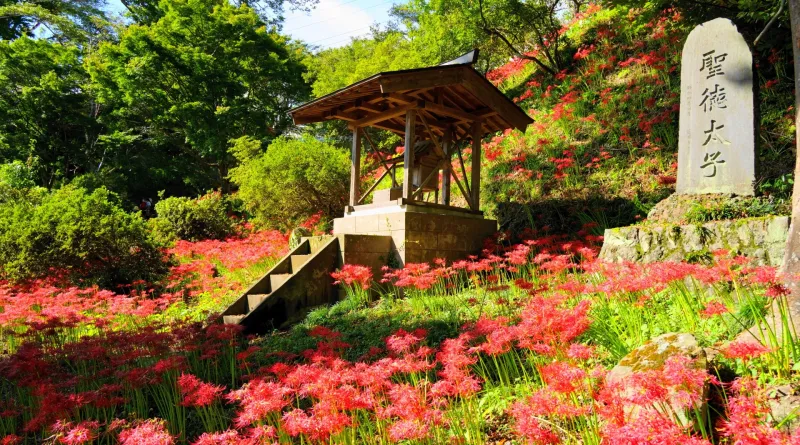
Địa điểm của lâu đài Motegi (lâu đài Kikyo) trong thời kỳ Kamakura. Từ ngọn đồi nhỏ trong công viên, bạn có thể nhìn thấy trung tâm thị trấn và những đầu máy hơi nước đang chạy ở phía xa. Công viên này nổi tiếng với hoa anh đào mùa xuân và đỏ rực rỡ với hoa bỉ ngạn khi mùa thu về. Ngoài ra, trong công viên còn có khu vực bãi cỏ và khu vui chơi cho trẻ em rất phong phú. Vì vậy, gia đình bạn có thể tận hưởng cả một ngày tại đây để picnic dã ngoại mà các bạn nhỏ cũng có thể vui chơi thỏa thích.
Website: http://www.town.motegi.tochigi.jp
10. Arashi-yama
Arashiyama là địa điểm tham quan được yêu thích với hoa anh đào, cảnh đẹp thiên nhiên quanh năm. Lá đỏ ở đây cũng không phải là ngoại lệ. Vào mùa lá đỏ, toàn bộ khu vực Arashiyama sẽ được nhuộm màu đỏ hoặc vàng, phong cảnh được phản chiếu trên mặt nước còn lộng lẫy hơn nữa. Cây cầu Togetsukyo trên nền phong cảnh núi Arashiyama, chùa Tenryuji- di sản văn hoá thế giới hay toà tháp cao 12m được bao quanh bởi lá đỏ momiji... là những địa điểm ngắm lá đỏ tuyệt đẹp.
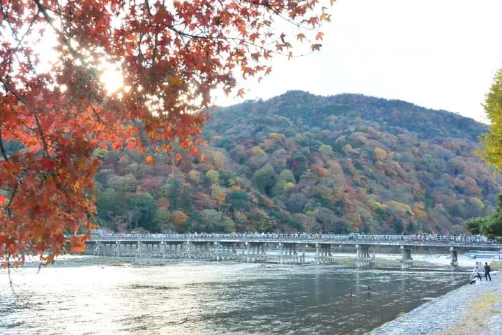
Arashiyama là địa điểm tham quan được yêu thích với hoa anh đào, cảnh đẹp thiên nhiên quanh năm. Lá đỏ ở đây cũng không phải là ngoại lệ. Vào mùa lá đỏ, toàn bộ khu vực Arashiyama sẽ được nhuộm màu đỏ hoặc vàng, phong cảnh được phản chiếu trên mặt nước còn lộng lẫy hơn nữa. Cây cầu Togetsukyo trên nền phong cảnh núi Arashiyama, chùa Tenryuji- di sản văn hoá thế giới hay toà tháp cao 12m được bao quanh bởi lá đỏ momiji... là những địa điểm ngắm lá đỏ tuyệt đẹp.
Website: Arashi-yama (ga Saga Arashi-yama)
11. Tetsugaku No Michi (哲学の道)
Từ chùa bạc Ginkaku, theo hướng Eikando và Nanzenj, con đường Triết học dài khoảng 1.5 Km. Có một con kênh (sosui) chạy dọc theo con đường, vào mùa thu, hàng cây chạy dọc con kênh nhuộm màu lộng lẫy cho nơi đây .
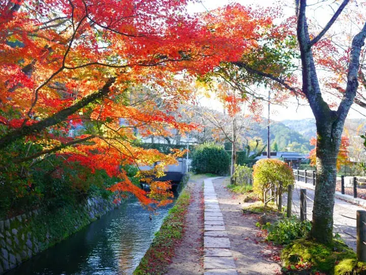
Vào thời điểm cuối mùa lá đỏ, lá cây vàng- đỏ rụng dưới chân tạo nên một tấm thảm tuyệt đẹp trải dài cả tuyến đường khiến ta cứ muốn đi dạo mãi thôi. Khi bạn tham quan những đến chùa nơi đây đừng quên tản bộ trên con đường này nhé.
Website: Tetsugaku No Michi (哲学の道)
12. Mizutani chaya
Quán trà Miyuza (水谷 茶屋) nằm trong khuôn viên công viên Nara Kasugano, đây là một quán trà theo phong cách truyền thống Nhật Bản với cách trang trí tinh tế và đậm chất hoài cổ. Vào mùa thu, không gian quán trở nên rực rỡ dưới màu lá thu đỏ vàng, cùng với những chú nai vàng xinh xắn của công viên, khung cảnh nơi đây trở nên thật đẹp đẽ và đầy chất thơ. Hệt như một bức tranh phong cảnh minh họa cho thơ Haiku ấy nhỉ? Mùa thu có lẽ là thời khắc đẹp nhất để bạn tận hưởng tách trà nóng và say sưa với những bản nhạc thiền tĩnh tâm, tự tại ở quán
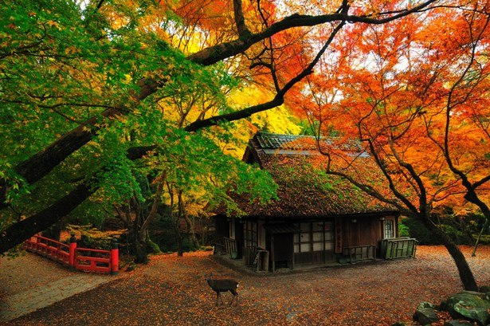
Website: #